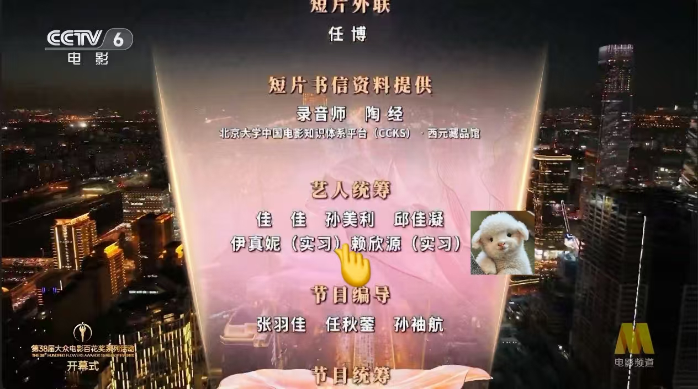
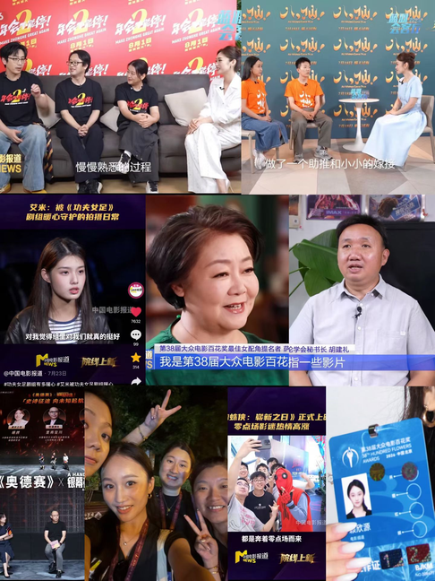
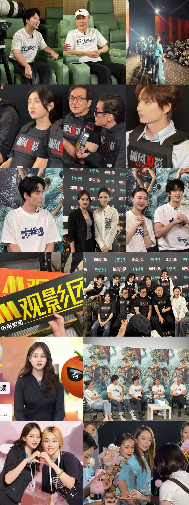
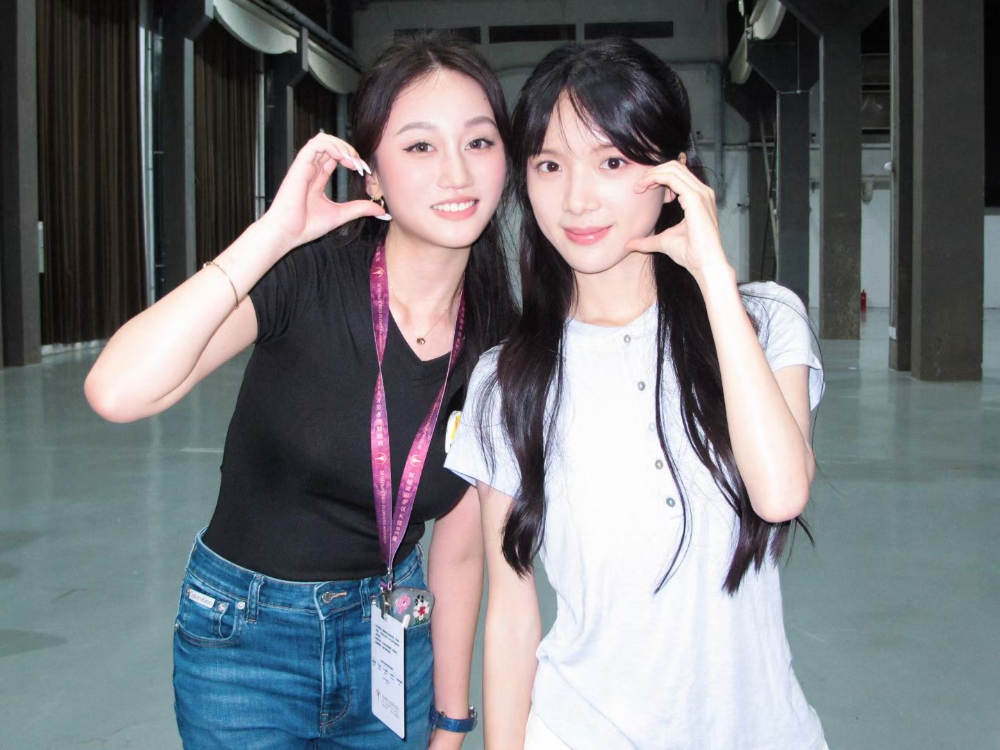
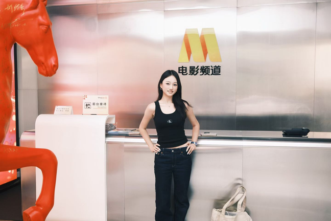

采访与报道
参与《蓝羽会客厅》采访录制、专题片拍摄、暑期档首映礼现场工作，协助完成影片发布会主创采访报道。
参与影片包括：
《捕风追影》《东极岛》《八仙！》《年会不能停2》《奥德赛》《脱缰者也》《有朵云像你》……
实习经历 / 01CHINA MOVIE REPORT
CCTV-6 电影频道 · 《中国电影报道》
实习记者 · 艺人统筹

01 / WORK NOTES
参与《蓝羽会客厅》采访录制、专题片拍摄、暑期档首映礼现场工作，协助完成影片发布会主创采访报道。
参与影片包括：
2026 年 8 月作为艺人统筹，参与《第 38 届大众电影百花奖》开幕式。
38TH HUNDRED FLOWERS AWARDS02 / ON LOCATION





03 / VIDEO WORKS